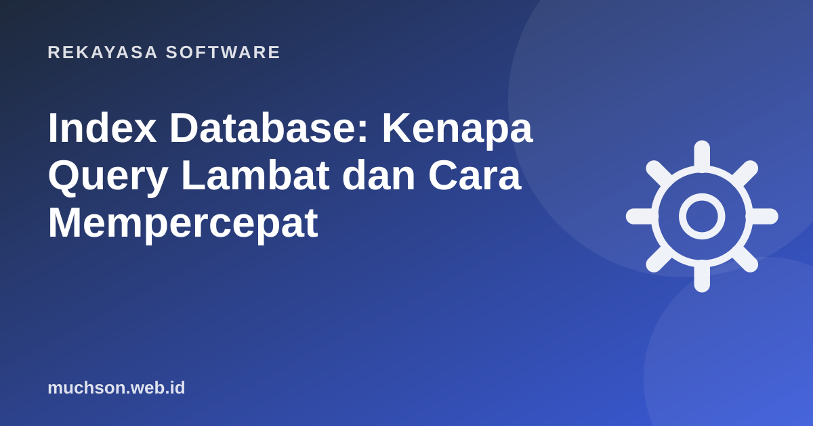

Beranda › Artikel › Rekayasa Software
Rekayasa SoftwareIndex Database: Kenapa Query Lambat dan Cara Mempercepat
Aplikasi yang tadinya cepat tiba-tiba lambat setelah datanya mencapai ratusan ribu baris. Dalam banyak kasus, penyebabnya satu: database terpaksa membaca seluruh tabel karena tidak ada index yang cocok. Menambahkan satu baris CREATE INDEX bisa mengubah waktu query dari detik menjadi milidetik.

Analogi: indeks di belakang buku
Mencari kata "fotosintesis" di buku biologi 500 halaman tanpa indeks berarti membaca halaman demi halaman. Dengan indeks di belakang buku, Anda langsung tahu: halaman 212. Index database bekerja sama: struktur terpisah yang tersusun urut dan menunjuk ke lokasi baris.
Membuat index
-- query yang sering dipakai
SELECT * FROM pesanan WHERE email_pelanggan = 'ani@contoh.id';
-- index untuk kolom di WHERE
CREATE INDEX idx_pesanan_email ON pesanan (email_pelanggan);
-- di produksi PostgreSQL, hindari mengunci tabel saat membuat index
CREATE INDEX CONCURRENTLY idx_pesanan_email ON pesanan (email_pelanggan);Membaca EXPLAIN ANALYZE
EXPLAIN ANALYZE
SELECT * FROM pesanan WHERE email_pelanggan = 'ani@contoh.id';
-- Sebelum index:
Seq Scan on pesanan (actual time=0.02..412.3 rows=3 loops=1)
Filter: (email_pelanggan = 'ani@contoh.id')
Rows Removed by Filter: 1999997
-- Sesudah index:
Index Scan using idx_pesanan_email on pesanan (actual time=0.03..0.05 rows=3)- Seq Scan pada tabel besar dengan banyak "Rows Removed by Filter" adalah tanda index mungkin dibutuhkan.
- actual time menunjukkan waktu nyata dalam milidetik.
- Bandingkan rows perkiraan dan aktual; selisih jauh bisa berarti statistik usang (jalankan ANALYZE).
Index gabungan dan urutan kolom
Index pada (status, dibuat_pada) membantu query yang memfilter status, atau status dan dibuat_pada bersama. Ia kurang membantu query yang hanya memfilter dibuat_pada. Seperti buku telepon yang urut nama belakang lalu nama depan: mudah mencari "Santoso, Budi", sulit mencari semua "Budi".
CREATE INDEX idx_pesanan_status_tanggal ON pesanan (status, dibuat_pada DESC);
-- terbantu
SELECT * FROM pesanan WHERE status = 'baru' ORDER BY dibuat_pada DESC LIMIT 20;Kapan index tidak membantu atau malah merugikan
Langkah memperbaiki query lambat
- Temukan query paling lambat atau paling sering (pg_stat_statements, slow query log).
- Jalankan EXPLAIN ANALYZE dengan parameter nyata.
- Cari Seq Scan besar, sort mahal, atau loop bersarang dengan banyak baris.
- Tambahkan index yang sesuai pola WHERE, JOIN, dan ORDER BY.
- Ukur lagi. Hapus index yang tidak pernah dipakai.
- Periksa juga masalah N+1 di kode aplikasi (ORM memanggil query di dalam loop).